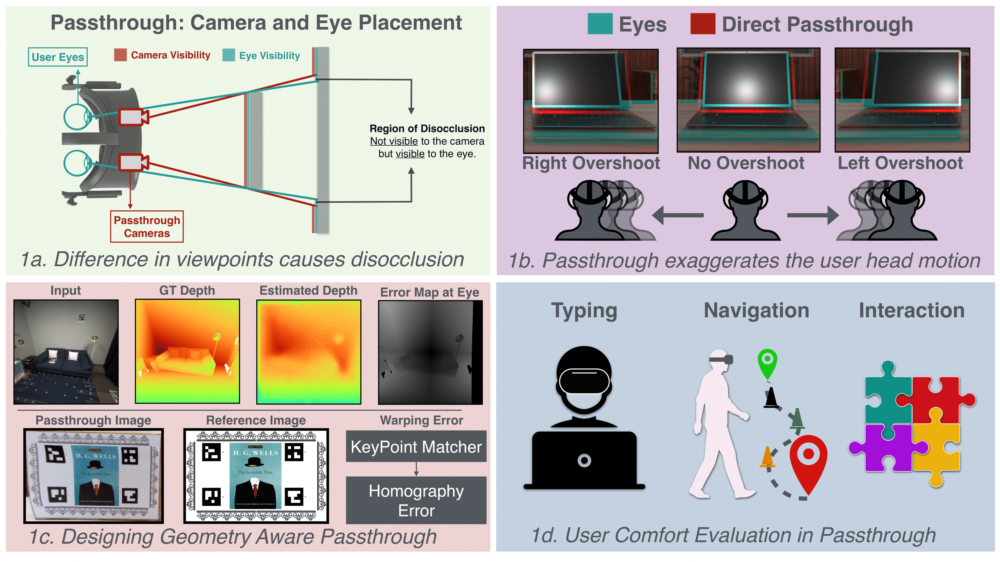
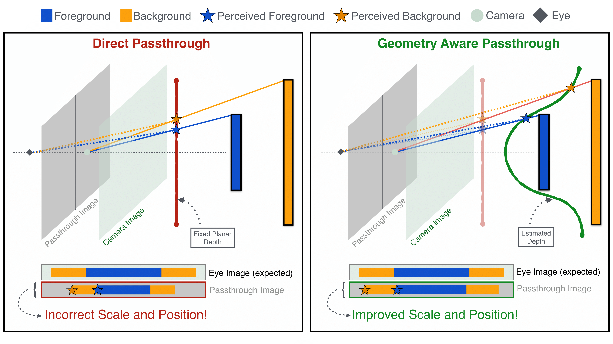
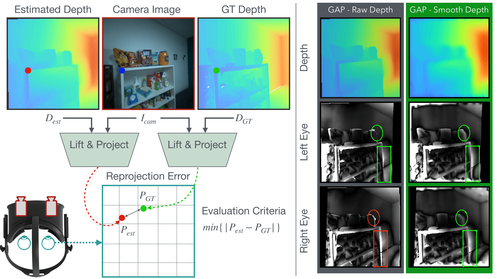

Video see-through headsets typically employ high resolution cameras to display the user’s physical environment. However, due to inherent hardware limitations, the camera’s perspective deviates from the user’s natural viewpoint. Hence, directly displaying camera feeds (direct passthrough) can result in visual artifacts such as disocclusion (1a), inaccurate perception of object positions, and exaggerated motion parallax (1b). In this work, we demonstrate that geometry aware passthrough algorithms can circumvent these artifacts, enabling precise view synthesis tailored to the user’s eyes. We present metrics for evaluating errors in perceived object location and warping artifacts arising from imperfect depth estimation, fundamental to a seamless passthrough experience (1c). Furthermore, a comprehensive user study is presented to investigate the impact of reprojection algorithms on cybersickness in real-world augmented reality scenarios, highlighting the significance of geometry aware passthrough systems (1d).

Comparison between reprojection in direct and geometry aware passthrough. In this figure, we show a 2D illustrationto describe the reprojection step where forground and background are reprojected using different geometries. For direct passthrough,each point in 3D is assumed to belong to a single plane situated at a certain distance. However, that results in reprojecting objects atincorrect pixel locations and at incorrect scale (left). In comparison, geometry aware passthrough uses a geometry estimate whichimproves the perceived location and the scale (right).

Two images are shown above taken from the headset placed at the same point in the scene.We observe that DP enlarges all the objects, making the scene look closer to the user. The scale difference can be easily noticed whencomparing the text on the bottom right of both images. While GAP improves the scale, it also results in warping artifacts which canbe observed on the edge of the door behind the hand.
